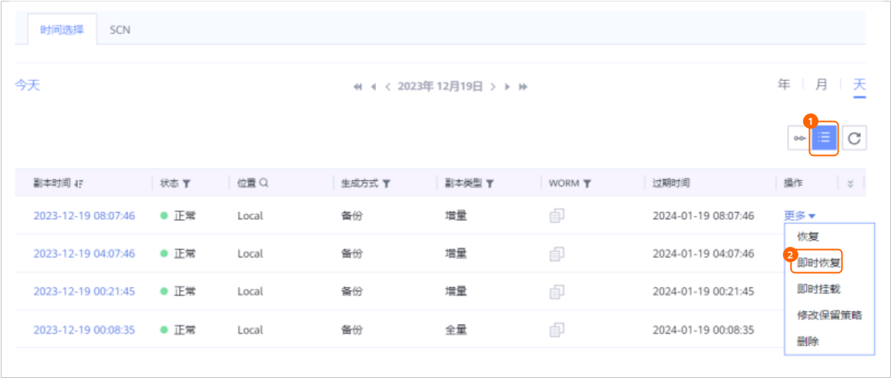
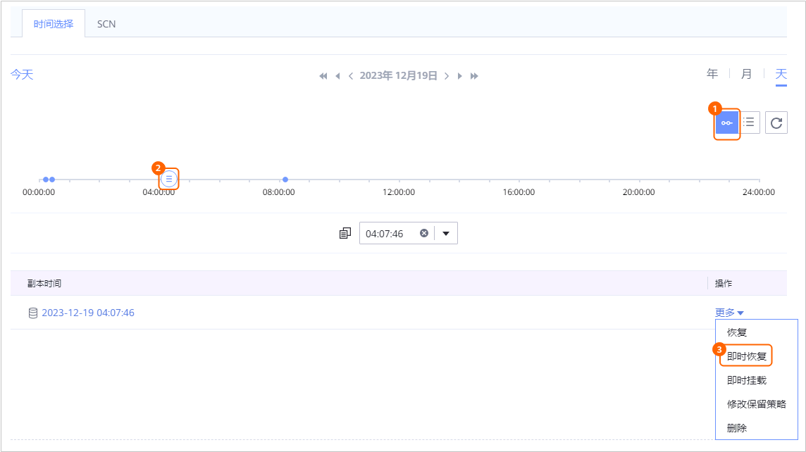

当需要对已备份的数据库进行即时恢复时，可以参考本节即时恢复数据库至原位置或新位置。
背景信息
- 即时恢复Oracle数据库支持：指定副本即时恢复、指定时间点即时恢复、指定SCN即时恢复。
- 支持使用备份副本、复制副本、即时挂载产生的副本进行即时恢复。支持恢复至原位置（复制副本不支持恢复至原位置）或新位置。
- 即时恢复至原位置
即时恢复至原位置是指恢复至数据库的原主机及原目录，恢复时会覆盖原数据库。
- 即时恢复至新位置
即时恢复至新位置时，系统在指定位置恢复新的数据库，如果存在同名数据库，则会覆盖同名数据库。
- 即时恢复至原位置
- 即时恢复时，如果目标位置存在同名数据库，建议恢复任务执行过程中不要中止任务，否则会导致原同名数据库损坏。
前提条件
- 恢复至的目标主机已安装ProtectAgent及其他相关软件。
具体操作可参考《ProtectAgent安装指南》。
- 原机恢复且主机已配置了OMF（Oracle Managed Files）时，请确保主机的磁盘剩余空间大小要大于数据库的大小。
- 异机恢复至目标主机时，请确保目标主机的磁盘剩余空间大小要大于数据库的大小。
操作步骤
- 恢复时，如果目标位置存在同名数据库，请先关闭该同名数据库再恢复，否则会导致恢复失败。关闭数据库操作如下：

当目标位置存在同名数据库时，恢复后同名数据库将被覆盖。
- 恢复至原位置时，要求目标主机的空闲内存大小必须大于数据库的SGA和PGA的大小总和，否则可能导致恢复失败。
检查内存、SGA、PGA大小的操作如下：
- 查看SGA和PGA大小。
- 登录Oracle数据库。
具体操作可参考1。
- 执行以下命令查看SGA的大小。
show parameter sga;
回显类似如下，查看“sga_target”的值。SQL> show parameter sga; NAME TYPE VALUE ------------------------------------ --------------------------------- ------------------------------ allow_group_access_to_sga boolean FALSE lock_sga boolean FALSE pre_page_sga boolean TRUE sga_max_size big integer 4768M sga_min_size big integer 0 sga_target big integer 4768M unified_audit_sga_queue_size integer 1048576
- 执行以下命令查看PGA的大小。
show parameter pga;
回显类似如下，查看“pga_aggregate_target”的值。
SQL> show parameter pga; NAME TYPE VALUE ------------------------------------ -------------------------------- ------------------------------ pga_aggregate_limit big integer 3900M pga_aggregate_target big integer 1589M
- 执行以下命令查看空闲内存大小。
free -h
回显类似如下，查看空闲内存大小。
[root@localhost ~]# free -h total used free shared buff/cache available Mem: 15G 2.2G 992M 4.8G 12G 8.1G Swap: 99G 0B 99G如果空闲内存的大小不大于数据库“sga_target”与“pga_aggregate_target”值的总和，请清理内存空间，使得空闲内存的大小大于数据库“sga_target”与“pga_aggregate_target”值的总和。
- 登录Oracle数据库。
- 查看SGA和PGA大小。
- 当操作系统为Linux且恢复的目标主机为HACS（High Availability Cluster Server）集群中的主机时，恢复前请先冻结HACS集群。
可参考如何检查恢复的目标主机是否为HACS集群中的主机确认目标主机是否为HACS集群中的主机。
- 选择“数据利用 > 副本数据 > 数据库 > Oracle”。
- 您可以以数据库资源维度或以副本维度查找副本，本节以资源维度为例进行说明。
在“资源”页签，根据数据库名称查找到需要进行即时恢复的数据库，并单击数据库名称。
- 指定副本或时间点进行即时恢复。
您可以指定某个副本或两个副本之间的任意时间点进行即时恢复。
如果需要指定SCN进行即时恢复，请忽略该步骤，执行7。- 在“时间选择”页签依次选择年、月、天查找副本。
当时间上显示
 ，即表示该月、该天存在副本。
，即表示该月、该天存在副本。 - 指定某个副本或两副本之间的任意时间点进行即时恢复。
- 指定某个副本进行即时恢复

- 指定两个副本之间的任意时间点进行即时恢复。
时间轴上
 表示该时间点存在副本。
表示该时间点存在副本。
- 对于1.5.0版本，时间轴上最多仅展示100个副本，单击
 可以查看所有副本。
可以查看所有副本。 - 执行时间点恢复时，由于管理界面无法获取恢复时所使用的副本信息，因此，在恢复任务和相关的事件页面，用户无法看到该恢复任务的副本信息。
- 对于1.5.0版本，时间轴上最多仅展示100个副本，单击
- 指定某个副本进行即时恢复
- 即时恢复Oracle数据库到原位置或新位置。
- 即时恢复Oracle数据库到原位置。
- 选择即时恢复至“原位置”。
目标路径所在磁盘的剩余空间要大于源数据库所占空间，否则恢复任务将失败。
- 配置即时恢复高级参数。
相关参数如表1所示。
表1 即时恢复任务高级参数说明 参数
说明
BCT功能
- 如果选择开启BCT功能，恢复成功后会自动开启BCT功能。
- 如果选择关闭BCT功能，恢复成功后会自动关闭BCT功能。
通道数
控制恢复任务的并行度，通过该参数指定RMAN与数据库实例之间的最大连接数。如果主机性能一般，建议保持默认值；如果主机性能良好，可以适量增大通道数，提高并发度，提升恢复效率，建议通道数与数据文件的数量保持一致。
取值范围：1~254，未配置时即时恢复通道默认为8。
执行脚本
您可以根据实际需求，在恢复任务执行前、执行成功后、执行失败后，执行自定义脚本。
恢复前执行脚本
请输入脚本名称，脚本名称以.sh结尾。确保脚本已存放在数据库主机安装目录下的“DataBackup/ProtectClient/ProtectClient-E/sbin/thirdparty”目录中，且登录数据库主机的用户（默认为root）对该脚本有可执行权限。如果无执行权限请依次执行以下命令授权：
chown root:root 脚本名称
chmod 500 脚本名称
说明：当配置了“恢复成功执行脚本”时，即使该脚本执行失败，管理界面上也会显示恢复任务的状态为“成功”。请您留意任务详情中是否有后置脚本执行失败的相关提示，如有请及时修正脚本。
恢复成功执行脚本
恢复失败执行脚本
- 单击“确定”。
- 选择即时恢复至“原位置”。
- 即时恢复Oracle数据库至新位置。
- 选择即时恢复至“新位置”。
- 配置即时恢复基本参数及高级参数。
相关参数说明如表2所示。
表2 即时恢复参数说明 参数
说明
目标主机/集群
即时恢复到的目标主机或集群。
说明：如果恢复到集群，请选择恢复到该集群下的一个节点。
原实例说明：仅1.6.0及后续版本存在此参数。
选择恢复到目标位置的原实例。
目标实例说明：仅1.6.0及后续版本存在此参数。
支持配置恢复到目标位置的实例名，如不配置，则与恢复前的原实例名保持一致。说明：如果配置了目标实例名，恢复后请使用目标实例名登录数据库。
目标路径
目标主机上待即时恢复的数据库所在的ASM磁盘组目录或者文件系统目录。即时恢复后的数据库名称与源数据库名称相同。
ASM磁盘组目录举例：+ORADATA，文件系统目录举例：/u01/oracle/oradata/。
说明：- 如果目标路径为空，请提前在目标主机上准备与生产数据库相同的ASM磁盘组目录或文件系统目录。
- 目标路径所在磁盘的剩余空间要大于源数据库所占空间，否则恢复任务将失败。
BCT功能
- 如果选择开启BCT功能，恢复成功后会自动开启BCT功能。
- 如果选择关闭BCT功能，恢复成功后会自动关闭BCT功能。
通道数
控制恢复任务的并行度，通过该参数指定RMAN与数据库实例之间的最大连接数。如果主机性能一般，建议保持默认值；如果主机性能良好，可以适量增大通道数，提高并发度，提升恢复效率，建议通道数与数据文件的数量保持一致。
取值范围：1~254，未配置时即时恢复通道默认为8。
恢复前执行脚本
您可以根据实际需求，在即时恢复任务执行前、执行成功后、执行失败后，执行自定义脚本。
请输入脚本名称，脚本名称以.sh结尾。确保脚本已存放在数据库主机安装目录下的“DataBackup/ProtectClient/ProtectClient-E/sbin/thirdparty”目录中，且登录数据库主机的用户（默认为root）对该脚本有可执行权限。如果无执行权限请依次执行以下命令授权：
chown root:root 脚本名称
chmod 500 脚本名称
恢复成功执行脚本
恢复失败执行脚本
修改数据库配置
根据目标主机的实际配置修改数据库参数，参数错误将导致恢复数据库失败。
说明：恢复时，要求目标主机的空闲内存大小必须大于数据库SGA和PGA的大小总和，否则可能导致恢复失败。
- 查看目标主机空闲内存的大小。
具体操作可参考2。
- 开启“修改数据库配置”开关后，搜索“*.pga_aggregate_target”和“*.sga_target”参数。
检查空闲内存大小是否大于“*.pga_aggregate_target”与“*.sga_target”的总和。
- 是，结束处理。
- 否，执行3。
- 修改“*.pga_aggregate_target”或“*.sga_target”其中一个参数或两个参数都修改，使得空闲内存大小大于“*.pga_aggregate_target”与“*.sga_target”的总和。
如果搜索到多个相同的参数，相同的参数均需修改。
- 如果修改了“*.pga_aggregate_target”，需要同步修改“实例名称.__pga_aggregate_target”的值，修改“实例名称.__pga_aggregate_target”为：
实例名称.__pga_aggregate_target = *.pga_aggregate_target * 1024 *1024
如果修改了“*.sga_target”，需要同步修改“实例名称.__sga_target”的值，计算“实例名称.__sga_target”：
实例名称.__sga_target = *.sga_target * 1024 *1024
- 单击“确定”。
对于1.6.0及后续版本，如果恢复的目标数据库名称与原数据库名称相同，恢复任务完成后，请对恢复目标资源执行资源扫描操作，以确保获取的实例名称信息正确。
- 即时恢复Oracle数据库到原位置。
- 在“时间选择”页签依次选择年、月、天查找副本。
- 指定SCN号进行即时恢复。
- 在“SCN”页签，输入SCN号，单击“更多 > 即时恢复”。
执行以下命令获取数据库当前SCN。
select dbms_flashback.get_system_change_number from dual;
- 选择备份副本进行恢复。
界面上展示的是包含当前SCN的所有备份副本。您可以根据备份副本时间判断恢复到的SCN。
如果没有任何副本显示，则说明要恢复的SCN点没有备份的日志，无法进行SCN恢复，请重新输入其他SCN。
- 即时恢复数据库至原位置或新位置。
具体配置请参考6.c。
- 在“SCN”页签，输入SCN号，单击“更多 > 即时恢复”。